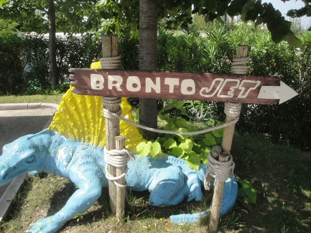

| |

Brontojet Review

For today's review, we're going back in time to my last visit to Movieland Studios to review Brontojet. You might not think much of it, but this was a fairly unique type of ride since it was one of the few remaining Schwarzkoph City Jets in existance. And now with the demolion of this ride, there is literally one Scwarzkoph City Jet left in the entire world. And it's at some small park in France, not near Paris. And this is the biggest coaster there. So....not a high priority at all and probably will never get there). So buckle up and here we go. We headed up the Spiral Lifthill, which offered us not only a nice view of the park, but also of Lake Garda. Anyways, we headed down a curved drop, got some speed, and whipped around a low to the ground turn before we rose up another curved hill, before we coasted around the spiral lifthill. Hey, it wasn't anything amazing, but I will admit that it was fun. We coasted around the turnaround, getting another nice view of Lake Garda before we got some headchoppers, going right under the earlier parts of Brontojet as we headed down another curved drop and straight into another low to the ground turn just before we rose up another small curved hill. I think I'm starting to see a pattern with this ride. Well, it started to get a little different as we went into this small dip as we circled around the spiral lift. We went around another turn, down a small dip, and turned into the final brakes. Hmm, not an amazing ride by any means, but it was a fun little ride. It had some charm, a little bit of a uniqueness to it, and of course, it was the only coaster when I visited. It may be gone, but at least Diabolik is there. So yeah. If you find yourself at Parc de la Vallée, check out the clone. It's not amazing, but it is a fun ride and a unique ride too.
5/10
Location: Movieland Studios
Opened at Lightwater Valley in 1996
Relocated to Londoun Castle in 2002
Relocated to Movieland Studios in 2010
Died in 2019
Built by: Schwarzkopf
Last Ridden: June 21, 2012
Whizzer Photos



Home
|